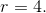
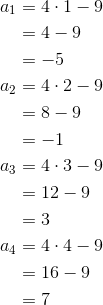
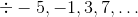
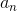
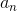
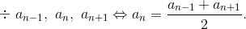
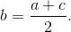
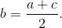

Proprietăți ale progresiei aritmetice
În cele ce urmează ți se vor prezenta câteva dintre proprietățile progresiilor aritmetice.
Fie șirul  o progresie aritmetică.
o progresie aritmetică.
Propoziția P2: Monotonia progresiei aritmetice
Progresia aritmetică este un şir:
- Strict crescător, dacă raţia
 este strict mai mare decât ;
este strict mai mare decât ; - Strict descrescător, dacă raţia este strict mai mică decât .
Exemple:
- Șir strict crescător: unde raţia este egală cu
 ;
; - Şir strict descrescător: unde raţia este
Propoziția P3: Termenul general al unei progresii aritmetice
Dacă şirul este o progresie aritmetică, având primul termen  şi raţia , atunci termenul general este definit prin formula:
şi raţia , atunci termenul general este definit prin formula:
unde  (Formula termenului general)
(Formula termenului general)
Demonstrație:
Arătăm că această formulă este adevărată, folosind metoda inducţiei matematice, despre care poți afla mai multe accesând următoarea pagină „Metoda inducției matematice”, din cadrul eBook-ului „Ghid - Metode de numărare”.
Notăm pentru
Etapa I: (etapa de verificare)
Pentru  , avem:
, avem:
Etapa II: (etapa de demonstrare)
Presupunem adevărată, pentru  și demonstrăm că
și demonstrăm că  este adevărată.
este adevărată.
Cum cele două etape sunt adevărate, ne rezultă că propoziţia este adevărată, pentru orice  număr natural.
număr natural.
Exercițiu rezolvat:
Se consideră şirul , cu termenul general dat de formula , pentru
- Să se stabilească dacă şirul dat este o progresie aritmetică şi să se calculeze primii patru termeni.
- Stabiliţi care dintre numerele următoare sunt termeni ai şirului
Soluție:
- Arătăm mai întâi că şirul este o progresie aritmetică , adică o să calculăm diferenţa a doi termeni consecutivi oarecare.
Astfel, avem termenii consecutivi:
Acum putem calcula diferența lor, pentru a vedea dacă rezultatul este o constantă:
Avem că este o constantă, pentru orice
Analog se arată că și așa mai departe.
Așadar, acest şir este o progresie aritmetică, având raţia egală cu diferenţa obţinută, adică 
Calculăm acum primii patru termeni ai progresiei, folosind relația dată 

Avem progresia:  .
- Verificăm dacă numerele date sunt termenii progresiei aritmetice de mai sus, folosind relația
Am găsit că numerele date sunt termenii respectiv ai progresiei aritmetice date.
Propoziția P4: Condiția ca trei numere consecutive să fie într-o progresie aritmetică
Şirul este o progresie aritmetică dacă şi numai dacă echivalent cu pentru orice  adică  este media aritmetică a termenilor vecini.
adică  este media aritmetică a termenilor vecini.
Proprietatea de mai sus, se notează astfel:

Demonstrație:
Considerăm şirul o progresie aritmetică, având raţia .
Atunci, se poate calcula în două moduri, după cum urmează:
Adunând relaţiile  şi
şi  , obţinem că:
, obţinem că:
Reciproc, din relaţia , scrisă sub forma , obţinem că diferenţa dintre doi termeni consecutivi ai şirului este aceeași, deci rezultă că şirul este o progresie aritmetică.
Succesiv, avem:
Observație:
Din Propoziția P4 , avem:
- Termenul de rang este media aritmetică a termenilor vecini lui (echidistanți), adică unde
- Fie numerele
 termenii consecutivi ai unei progresii aritmetice, atunci putem spune că numerele sunt în progresie aritmetică dacă şi numai dacă este îndeplinită următoarea relație: 
termenii consecutivi ai unei progresii aritmetice, atunci putem spune că numerele sunt în progresie aritmetică dacă şi numai dacă este îndeplinită următoarea relație: 
Exemple:
- Să se arate că numerele în această ordine, formează o progresie aritmetică.
Soluție:
Folosind Propoziția P4, avem:
Să se determine
 , astfel încât numerele , în această ordine, să formeaze o progresie aritmetică.
, astfel încât numerele , în această ordine, să formeaze o progresie aritmetică.
Soluție:
Din Propoziția P4, obținem că:
Propoziția P5: Suma numerelor extreme
Fie progresia aritmetică
Atunci suma a oricare două numere egal depărtate de numerele extreme este egală cu suma numerelor extreme, adică:
pentru orice
Demonstrație:
Scriem numerele în funcţie de primul termen şi raţia , cu ajutorul formulei termenului general
![\begin{align*} a_2&=a_1+(2-1)r \\ &=a_1+r \\ &\ \ \vdots \\ a_n&=a_1+(n-1)r \\ a_{n-1}&=a_1+(n-1-1)r \\ &=a_1+nr-2r \\ &\ \ \vdots \\ a_k&=a_1+(k-1)r \\ &=a_1+kr-r \\ a_{n-k+1}&=a_1+(n-k+1-1)r \\ &=a_1+(n-k)r \\ a_1+a_n&=a_1+a_1+(n-1)r \\ &=a_1+a_1+nr-r \\ &=2a_1+(n-1)r \\ a_2+a_{n-1}&=a_1+r+a_1+nr-2r \\ &=2a_1+nr-r \\ &=2a_1+(n-1)r \\ &\ \ \vdots \\ a_k+a_{n-k+1}&=a_1+kr-r+a_1+(n-k)r \\ &=2a_1+kr-r+nr-kr \\ &=2a_1+(n-1)r \\ \Leftrightarrow a_1+a_n&=a_2+a_{n-1}=\cdots=a_k+a_{n-k+1}=2a_1+(n-1)r. \end{align*}](../../media/webbooks/455/3982/images/equations/x-no1ub_ac0jhqld78hlpa==.gif)
Propoziția P6: Suma primilor termeni ai unei progresii aritmetice
Dacă este o progresie aritmetică, atunci suma primilor termeni se calculează astfel:
Demonstraţie:
Scriem suma desfășurat de două ori, adunăm cele două sume, iar apoi folosim Proprietate P5 şi obţinem:
Exerciții rezolvate:
- Să se afle suma primilor
 termeni ai progresii aritmetice
termeni ai progresii aritmetice  având primul termen şi raţia
având primul termen şi raţia
Soluție:
Folosind Proprietatea P3 și Proprietatea P6, avem:
- Să se afle suma primilor
 termeni ai progresii aritmetice cunoscându-i primul termen și termenul al șaptelea
termeni ai progresii aritmetice cunoscându-i primul termen și termenul al șaptelea
Soluție:
Aplicăm Proprietatea P3 și Proprietatea P6 , obținând că:
Aflăm termenul al nouălea al progresiei nostre:
Acuma putem afla suma primilor termeni ai progresiei aritmetice date: